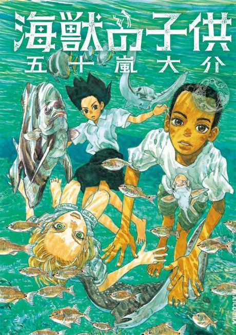

Anime
Anime
Manga2019 · Drama, Mystery, Supernatural
Children of the Sea
海獣の子供
AniList7.2
Animeter—
Movie1 ep
MangaFilm
Is it worth watching?
The drop map is for series. Rate the film above to add to its Animeter score.